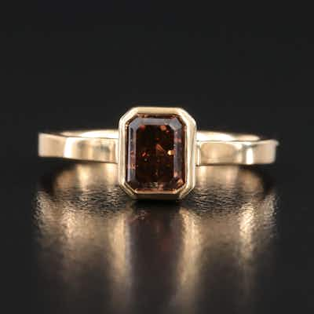

OUTPRICED18K 1.02 CT Fancy Orange Brown Diamond Solitaire Ring with IGI Report
18K yellow gold solitaire ring set with a 1.02 ct emerald-cut fancy orange-brown diamond,
0 min left
Current bid$825 · 37 bids
Est. value$836
Your max bid$428
All-in at max$527
Projected close$825
Margin at bid−$147
Details & price history →